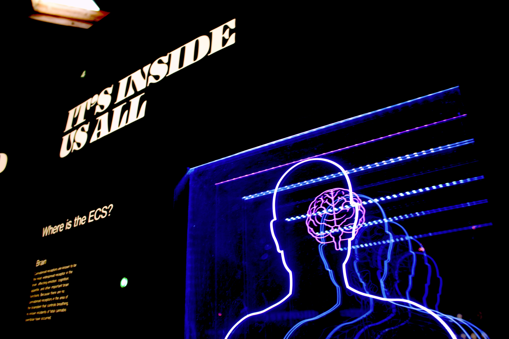

Hello, I'm Daniel Lialin!
I'm a passionate and versatile individual, blending technical expertise with a keen interest in human behavior and creative expression. My journey is about continuous learning and applying diverse skills to create meaningful impact.
Languages
-Italian: Native
-Russian: Native
-English: C2 certified
-Spanish: B2 certified
-French:B2 certified
Business
-Passion: Ever since I was born,
-Duke University: Entrepreneurship Specialization,
Sport
-Gym: 4 times a week
-Muay Thai: 3 times a week
Swimming: 10+ years of experience
Tennis: 5+ years of experience
Social Media
-Certification: Meta Certified Digital Marketing Associate
-Specialization: Meta Social Media Marketing
Psychology
-Yale University: Introduction to Psychology Course
-Passion: Hundreds of hours of self-study with a focus in sociology
Computer Science
-Harvard University: CS50P
-Hack Club: Community of young programmers, participated in various events
-Google: Prompt engineering course
Traveling
-Passion: I love traveling because it allows me to expand my horizons and experience new cultures.
-Effects: Traveling makes me more flexible, adaptive, and responsive in my decision-making, as I have come across different approaches to things.
ABOUT ME

LANGUAGES

BUSINESS

SPORT

SOCIAL
MEDIA

PSYCHOLOGY

COMPUTER
SCIENCE

TRAVELING
AB
OUT
ME
DANIEL
I'm a passionate and versatile individual, as portrayed by my skills in various different domains. I am naturally very curious and have an interest in basically everything, which makes me adaptive and ready to learn new things if needed.
GUA
GES
ITALIAN
Italian is my native language since I was born and raised in Italy. I completely master the language and I have a deep relationship with it.
GUA
GES
RUSSIAN
Russian is my second native language, or my hereditary language, as I started speaking it ever since I was little and inherited it from my father of Belarusian origin. I can speak and understand it fluently, while I'm at an upper-intermediate level when it comes to writing.
GUA
GES
ENGLISH
English is my third language, and it's another language I started speaking since I was very little. I use the language a lot and I completely master it, having gotten a C2 level certification from Cambridge.
GUA
GES
SPANISH
Spanish is my 4th language, and I learned it in school. I currently have a B2 level in the language (certified). I love Spanish and Latin American culture, literature, and food.
GUA
GES
FRENCH
French is my 5th language and the first language I learned on my own. I learned it in less than 1 year, reached the B2 level (certified), and am now preparing for the Dalf C1 exam.
SIN
ESS
PASSION
Ever since I was very little, I have had a passion for business and entrepreneurship. I always dreamt of opening my own company and have pursued various odd jobs and small entrepreneurial ventures.
SIN
ESS
DUKE UNIVERSITY SPECIALIZATION
I completed Duke University's specialization in entrepreneurship, which taught me many things and allowed me to gain a deeper understanding of the subject.
OR
T
GYM
I love sports, physical activity, and going to the gym. In fact, for the past 2 years, I have been going to the gym consistently. Even though I'm still young, I understand the importance of being healthy and active, not only for physical reasons but, more importantly, for psychological ones. I believe a person that is active physically will also be more efficient at work and overall have a better quality of life.
OR
T
MUAY THAI
I have started practicing this discipline around a year ago and have been loving it ever since. Muay Thai has taught me discipline, the acceptance of failure, humbleness, and, in general, it has ingrained a different culture in my spirit.
OR
T
SWIMMING
I swam for most of my life. I started when I was still a baby and only stopped a couple of years ago. It is definitely something that impacted me, as I did it for such a long time.
OR
T
TENNIS
During most of my life, I practiced 2 sports, the first one clearly being swimming and the other being tennis. I trained in tennis for more than 5 years and still enjoy playing casually sometimes.
IAL
MEDIA
META DIGITAL MARKETING ASSOCIATE
I took and passed the Meta Digital Marketing Associate certification exam, which means I understand Meta's technologies, its value, and how to create marketing campaigns.
IAL
MEDIA
META SOCIAL MEDIA MARKETING SPECIALIZATION
This is a specialization available on Coursera made up of 6 different courses. This specialization taught me what I need to know about social media marketing, with a special focus on Meta's technologies but not limited to them.
HOL
OGY
PASSION
Psychology is something that profoundly fascinates me. I believe human behavior and its consequences are things that should be studied, as they so deeply influence and shape our way of living and our society. That's why I have a proactive interest in the field, especially in Sociology. This has allowed me to be conscious of multiple biases in our society and make decisions more consciously.
HOL
OGY
YALE UNIVERSITY COURSE
I took Yale's Introduction to Psychology course. It gives a brief but comprehensive description of the most popular fields of psychology and neuroscience.
HOL
OGY
PERSONAL RESEARCH
Outside of formal learning, I have studied psychology for hundreds of hours. I have read hundreds of peer-reviewed studies and books and listened to masterclasses and conferences from experts in the field.
HOL
OGY
LEARNING HOW TO LEARN
This course explores evidence-based techniques to enhance learning efficiency, covering topics such as focused vs. diffuse thinking, memory retention (chunking, spaced repetition), and overcoming procrastination. Grounded in neuroscience and cognitive psychology, it provides practical strategies for mastering complex subjects, optimizing study habits, and improving long-term knowledge retention. This course made me more productive and efficient overall.
TER
SCIENCE
CS50
I took Harvard's CS50P course and am in the middle of CS50x. These two courses were the basis of my programming experience. I now know basic computer science concepts and can code in multiple languages, such as Python and C.
TER
SCIENCE
HACK CLUB
I always had an interest in technology, but what really helped me build things after the initial CS50P course was Hack Club. It's a non-profit organization that helps young programmers around the world develop projects. Thousands of others and I wouldn't be where we are right now without them, as they provide a very stimulating environment and plenty of opportunities.
TER
SCIENCE
GOOGLE PROMPT ENGINEERING
Ever since the AI revolution, one of my priorities has been to learn more about AI and how to use it. This course provides exactly that: it's a course where software engineers at Google explain how to use artificial intelligence better for all your tasks and guide you through becoming a prompt engineer.
TER
SCIENCE
WHAT I HAVE WORKED WITH
I have made projects in Python, C, HTML & CSS, and JavaScript.
VEL
ING
VALUES
Traveling has made me discover new cultures and their associated values. You only understand how limited your views are when you come across someone or something that defies them, and that's something traveling has allowed me to do.
VEL
ING
ASPIRATIONS
I'm a naturally curious person, and that curiosity has also led to one of my biggest dreams: traveling to every country on Earth. While doing this, I hope to grow as a person and learn more about myself.